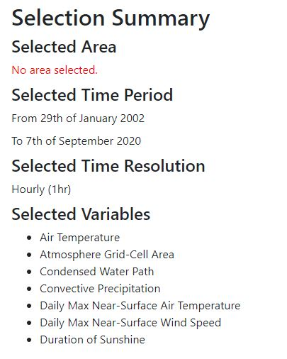

You can choose the file form for your wanted data, then the application will evaluate the size of the data. That information will help you evaluate how much time will be taken to download the data by your Internet situation and restrict the size of the data. Any data size excesses 90G that is not approved to download. The strict rule is by climate database to avoid overload.

All selected parameters will be recorded and showed in this area, let you know what your selections are to help you understand what climate data will be provided. The function provides a chance to avoid human mistake before you download the data – commonly, the climate data is very large that means it will take you a lot of time. If you get the data which is not you wanted, the download time has been wasted.
